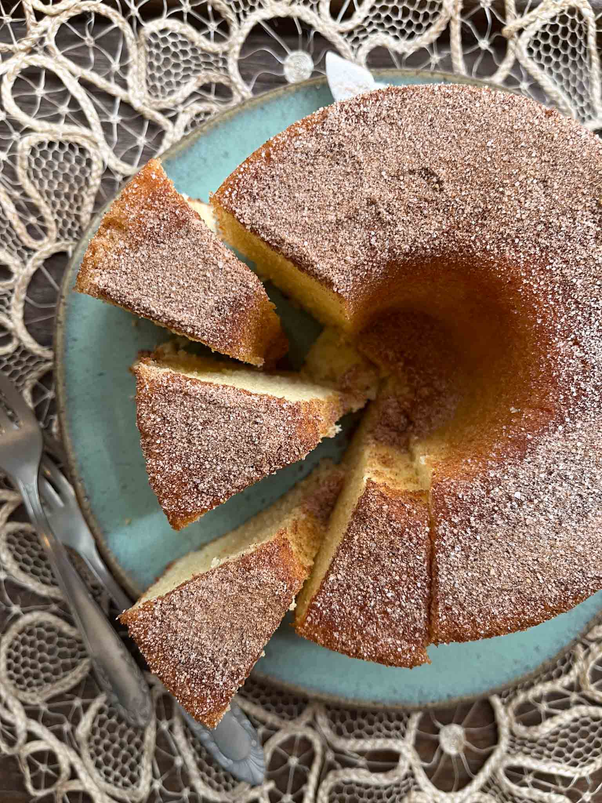

Aqueça o forno a 180ºC (médio). Unte com manteiga e polvilhe com farinha uma fôrma com buraco no meio pequena (ou pra bolo inglês), reserve. Coloque os ovos, o açúcar, a baunilha e a canela na tigela da batedeira, separe ou aro ou as pás e deixe tudo pronto pra começar a bater. Numa tigela, misture a farinha, o sal e o fermento e reserve. Coloque o leite e a manteiga numa panelinha, aqueça, espere ferver e retire do fogo (a mistura terá que entrar quente na massa, por isso será preciso trabalhar rápido). Com a batedeira, em velocidade alta, bata a mistura de ovos com açúcar até que ela fica bem fofa, amarelinha e dobre de volume. Diminua a velocidade pro mínimo, ou usando uma espátula, incorpore a mistura em duas etapas, mexendo só o bastante pra conseguir uma massa homogênea. Então, sempre batendo em velocidade baixa, comece a juntar a mistura do leite ainda bem quente, sempre aos pouquinhos e batendo também apenas até conseguir uma massa homogênea e ainda bem fofa. Despeje a massa na fôrma e asse o bolo por uns 45 minutos, até que esteja crescido, dourado e firme e dourado (enfiando um palito no centro, ele deverá sair limpo). Retire o bolo do forno, aguarde 15 minutos e desenforme sobre o prato de servir. Deixe amornar por mais uns 45 minutos, polvilhe com açúcar e canela e sirva.